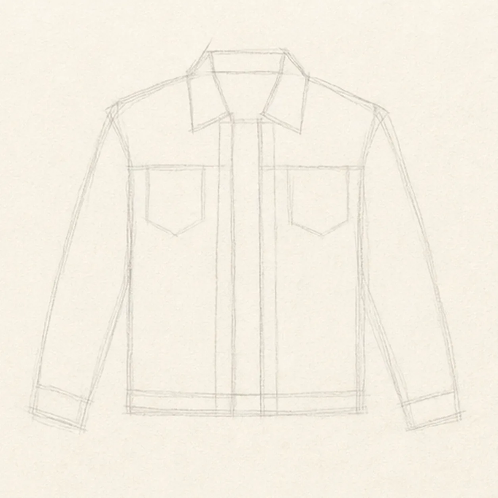
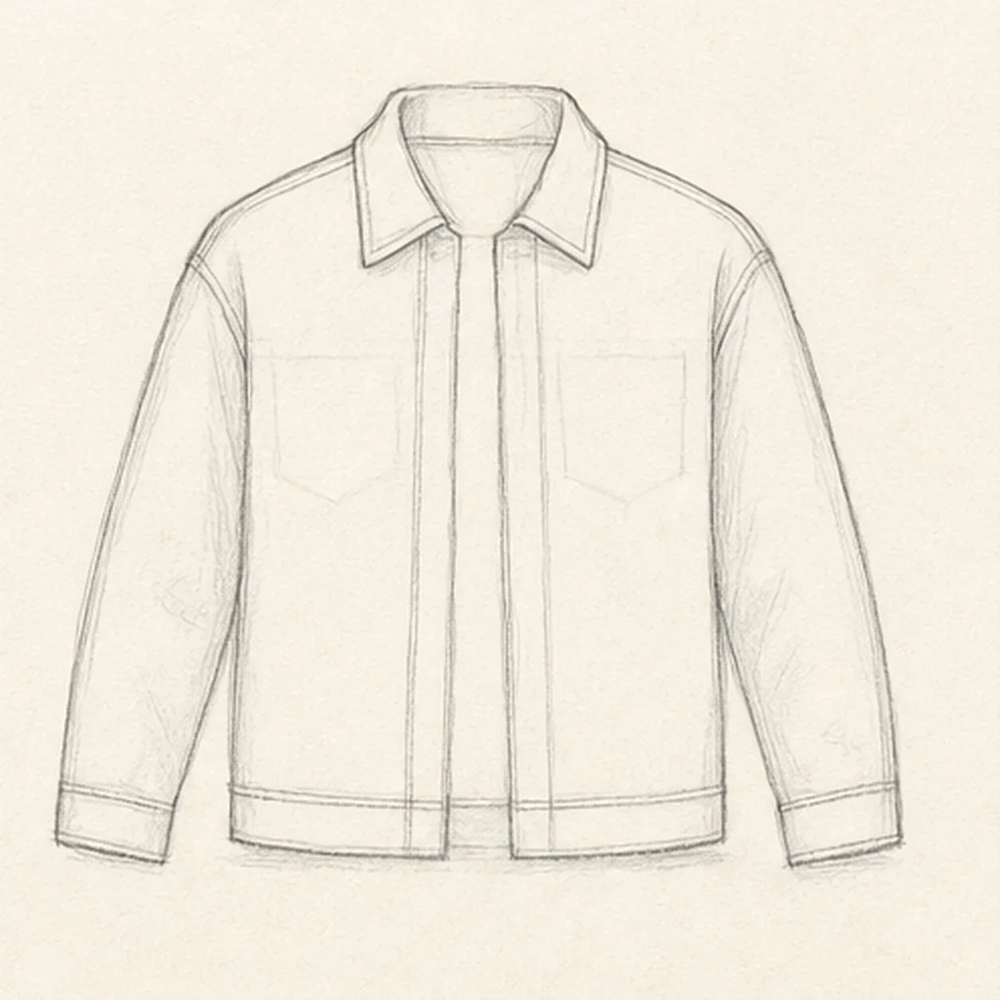
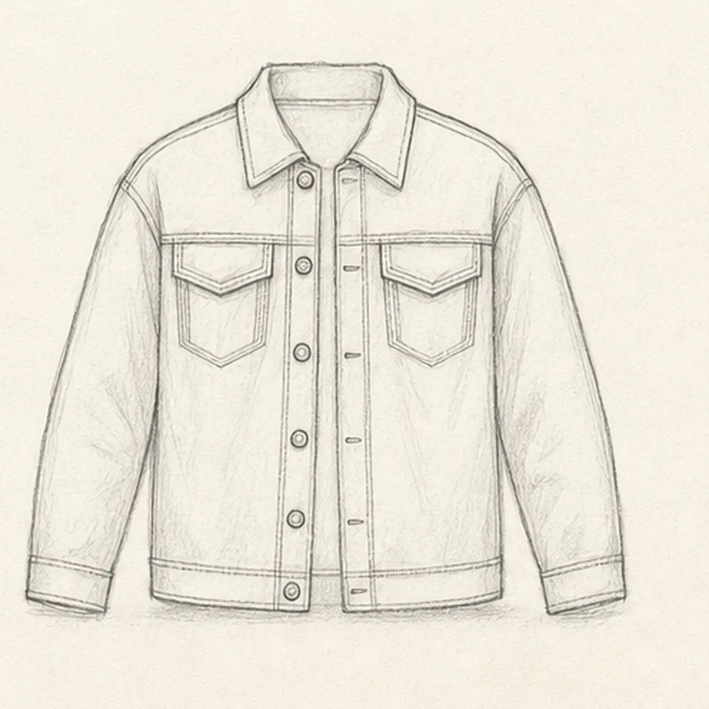
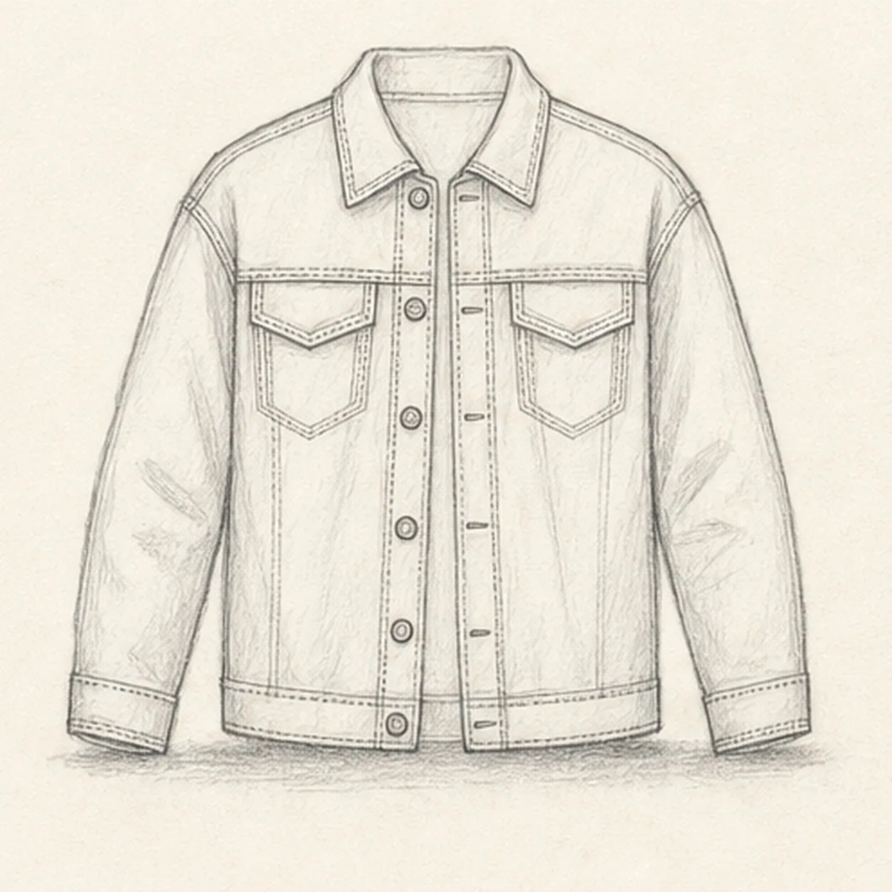
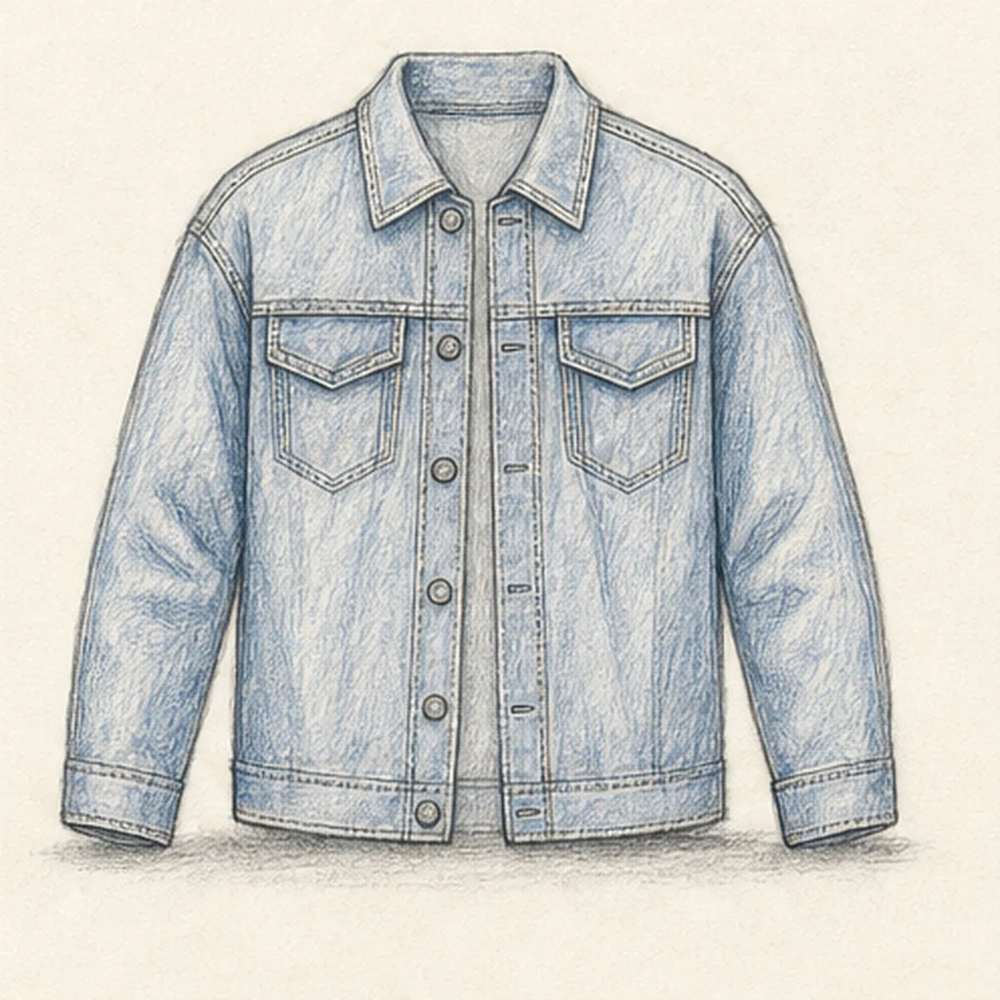

From the archive
Let's draw a denim jacket
Treat this as one small practice round: build the subject lightly, notice the shapes, then darken only the lines that help the finished sketch.
-
01

Block in the jacket
Draw a light shoulder line and torso block, add the center opening and collar reserve, then place two relaxed sleeve gestures, cuff positions, and two chest-pocket footprints.
Sketch tip: Ghost the shoulder line before touching down, then compare the paper spaces beneath both sleeves. Keep the collar and pocket footprints pale so you do not finish seams that those forms will cover.
-
02

Shape the jacket silhouette
Wrap the guides with the pointed collar, two front plackets, relaxed sleeves, cuffs, and straight hem while preserving the same front view.
Sketch tip: Rotate the page for each long sleeve edge and pull it in one relaxed pass. Let the shoulders differ slightly so the jacket feels worn rather than mechanically mirrored.
-
03

Build the denim panels
Add the back-yoke seam, two chest pockets with flaps, cuff seams, hem band, and exactly six front buttons inside the established silhouette.
Sketch tip: Use the yoke as a level reference for the pocket tops, then count all six buttons before darkening them. Keep the pocket flaps wide enough to read at thumbnail size.
-
04

Add seams and folds
Draw double-stitch lines along the established panels, add a few sleeve and torso folds, small buttonholes, and one shallow ground shadow.
Sketch tip: Keep parallel stitch lines close together and break them cleanly at the pockets and buttons. Aim each fold toward a nearby seam or bend instead of scattering wrinkles evenly.
-
05

Shade the denim
Layer soft graphite and restrained indigo-blue pencil over the established jacket panels, pockets, cuffs, folds, hardware, and shadow.
Sketch tip: Pull the blue strokes in the direction of each sleeve or torso panel and leave narrow paper gaps as worn highlights. Build two light passes instead of filling the denim flat.
-
06

Finish the denim study
Strengthen the keeper contours and clarify the established collar, plackets, sleeves, pockets, six buttons, seams, folds, restrained color, highlights, and shadow.
Sketch tip: Trace both sleeve openings and the center plackets with your eyes, then stop. A person, hanger, logo, patch, pin, or room scene would turn this focused garment study into a different lesson.